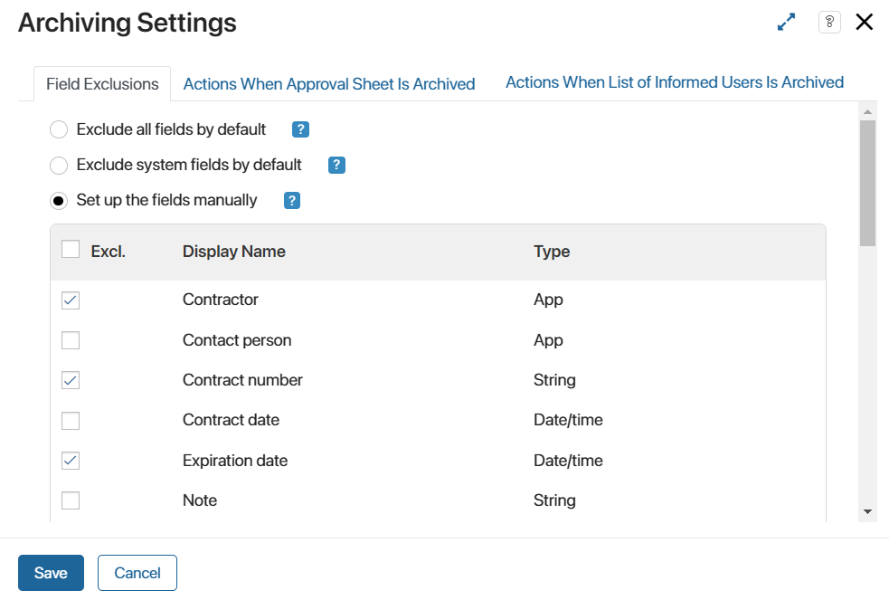

When an app item is sent for information or approval, employees are assigned tasks and a list of informed users or approval sheet is generated on the document page. This allows you to view the users involved in the process and their decisions.
Before the approval or review process is complete, employees can open the item page and edit the data, for example, to specify a different value for any document property.
In this case, it may be necessary to notify users about data changes in the process and mark the approval sheet or list of informed users as outdated. For this purpose, the option of archiving the current sheet or list and terminating the running process is used.
For each app, you can set individual archiving rules, i.e., you select the item properties that can or cannot be edited during the approval and review process. In addition, in the settings, you can specify the business processes that will be launched after each sheet or list is archived.
For example, the process participants are approving a certain document, and another user has added a new version of it. You can set the settings so that the approval sheet is archived after that. When a decision is made by one of the employees, the approval process will be interrupted, and the archived sheet will be labeled as Canceled. Thus, all participants will know that the approval sheet is not up to date and that the document needs to be send for review again.
Set up archiving settings
- Click on the gear icon next to the name of the app. In the menu, select Other > Approval Settings.
- In the provided window on the Field Exclusions tab, enable one of the available options:

- Exclude all fields by default. This option is selected by default and allows editing any fields of an app item during the approval or review process. The approval sheets and lists of informed users are not archived in this case.
- Exclude system fields by default. Enable this option to allow users to edit the system fields such as Identifier, Author, or Created on, without interrupting the approval or review process. Note that for Document type apps, you cannot exclude the Name and File fields; for Event type apps, you cannot exclude Start date or End date. If a user edits any of these fields, the approval sheet or list of informed users will be archived.
- Set up the fields manually. In the list of fields, select those that can be edited during the approval or review process. The provided list includes all the app properties, both system and custom ones. Make sure to include the Editor and Edited on fields because they are modified each time any changes are made to the item. If you do not select them, the approval sheet or list of informed users will be archived regardless of other settings.
For example, when working with a contract, you want to interrupt the approval process and archive the current sheet every time users add a new version of the file. In the archiving settings, select the Set up the fields manually option and check all fields except the property of the Files type where the contract is stored.
- On the Actions When Approval Sheet Is Archived and Actions When List of Informed Users Is Archived tabs, you can specify the business processes that will be launched when archiving an approval sheet or list of informed users. You can select different processes for two ready-made document routes. For example, you can change the status of an item from Approved to Reapproval is required during a process when archiving the approval sheet. To configure the process launch:
- On the required tab, enable the option to start a process for approval sheets or lists of informed users.
- Click Select Process and specify which process to run when archiving a sheet or list.
- In the Link to field setting, specify which process context variable the app item that triggered the process instance will be passed to. If there is a context variable associated with the configured app, it will be automatically added.
- Configure the data transfer from the app to the process. To do this, click the Configure Input Parameters link and map variables from the process context to app fields.
- Save the settings.
Please note that when exporting an app, the archiving settings are downloaded as well. If a business process associated with the exported app is launched during the archiving, all settings will remain. When importing to another company, they will be executed correctly. If the process selected in the settings is created in another system component, it is recommended to export the app as part of a solution to archive the sheet or list.
Each time you apply new archiving settings to the app, all current approval sheets and lists of informed users in the items are archived. The documents are then sent through the process again with the new archiving settings.
Approval sheets can be retrieved from the archive:
- Automatically: If an approval sheet of the document is archived due to a change of settings in the app, it will become valid when the original archiving settings are set. That is, you should set the settings that were in effect when the document was sent for approval.
- Manually: Users with permission to edit items in the app can unarchive an approval sheet. For example, not to interrupt the process when changing the archiving settings, the sheet is marked as valid until the approval tasks are performed. To do this, open the list of archived approval sheets on the document page and click the arrow icon next to the required file. Read more about it in the Lists of informed users and approval sheets article.
Found a typo? Select it and press Ctrl+Enter to send us feedback